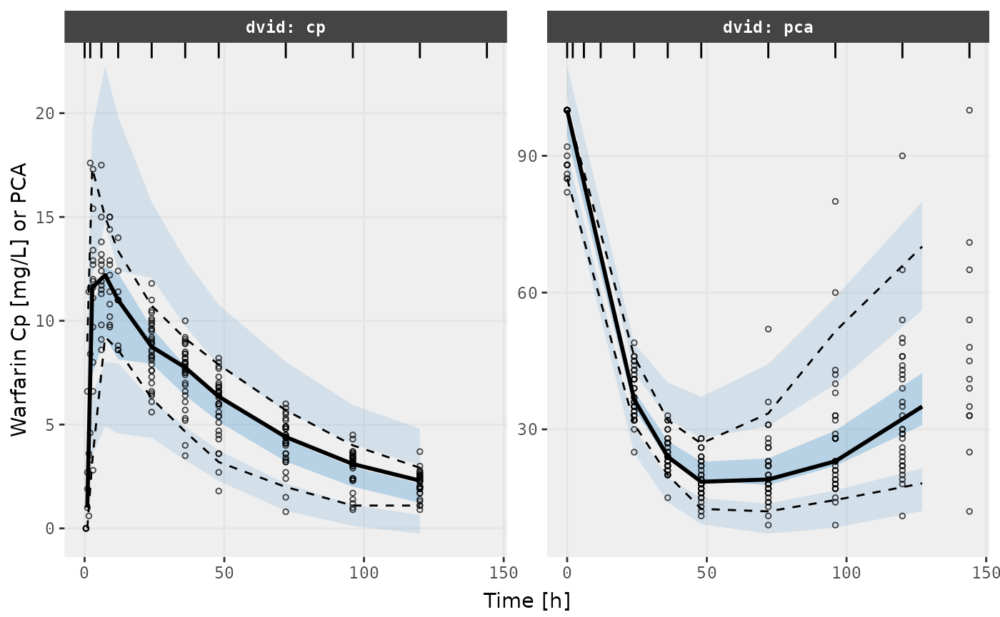
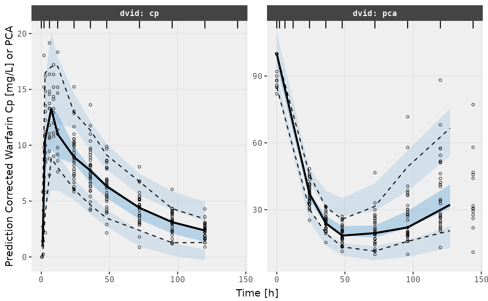

library(babelmixr2)
#> Loading required package: nlmixr2
#> Loading required package: nlmixr2dataStep 0: What do you need to do to have nlmixr2 run
NONMEM from a nlmixr2 model
To use NONMEM in nlmixr, you do not need to change your
data or your nlmixr2 dataset. babelmixr2 will
do the heavy lifting here.
You do need to setup how to run NONMEM. For many cases
this is easy; You simply have to figure out the command to run
NONMEM (it is often useful to use the full command path).
You can set it in options("babelmixr2.nonmem"="nmfe743") or
use nonmemControl(runCommand="nmfe743"). I prefer the
options() method since you only need to set it once. This
could also be a function if you prefer (but I will not cover using the
function here).
Step 1: Run a nlmixr2 in NONMEM
Lets take the classic warfarin example to start the comparison.
The model we use in the nlmixr2 vignettes is:
library(babelmixr2)
pk.turnover.emax3 <- function() {
ini({
tktr <- log(1)
tka <- log(1)
tcl <- log(0.1)
tv <- log(10)
##
eta.ktr ~ 1
eta.ka ~ 1
eta.cl ~ 2
eta.v ~ 1
prop.err <- 0.1
pkadd.err <- 0.1
##
temax <- logit(0.8)
tec50 <- log(0.5)
tkout <- log(0.05)
te0 <- log(100)
##
eta.emax ~ .5
eta.ec50 ~ .5
eta.kout ~ .5
eta.e0 ~ .5
##
pdadd.err <- 10
})
model({
ktr <- exp(tktr + eta.ktr)
ka <- exp(tka + eta.ka)
cl <- exp(tcl + eta.cl)
v <- exp(tv + eta.v)
emax = expit(temax+eta.emax)
ec50 = exp(tec50 + eta.ec50)
kout = exp(tkout + eta.kout)
e0 = exp(te0 + eta.e0)
##
DCP = center/v
PD=1-emax*DCP/(ec50+DCP)
##
effect(0) = e0
kin = e0*kout
##
d/dt(depot) = -ktr * depot
d/dt(gut) = ktr * depot -ka * gut
d/dt(center) = ka * gut - cl / v * center
d/dt(effect) = kin*PD -kout*effect
##
cp = center / v
cp ~ prop(prop.err) + add(pkadd.err)
effect ~ add(pdadd.err) | pca
})
}Now you can run the nlmixr2 model using
NONMEM you simply can run it directly:
try(nlmixr(pk.turnover.emax3, nlmixr2data::warfarin, "nonmem",
nonmemControl(readRounding=FALSE, modelName="pk.turnover.emax3")),
silent=TRUE)
#> ℹ parameter labels from comments are typically ignored in non-interactive mode
#> ℹ Need to run with the source intact to parse comments
#> → loading into symengine environment...
#> → pruning branches (`if`/`else`) of full model...
#> ✔ done
#>
#>
#> WARNINGS AND ERRORS (IF ANY) FOR PROBLEM 1
#>
#> (WARNING 2) NM-TRAN INFERS THAT THE DATA ARE POPULATION.
#>
#>
#> 0MINIMIZATION TERMINATED
#> DUE TO ROUNDING ERRORS (ERROR=134)
#> NO. OF FUNCTION EVALUATIONS USED: 1088
#> NO. OF SIG. DIGITS UNREPORTABLE
#> 0PARAMETER ESTIMATE IS NEAR ITS BOUNDARY
#>
#> nonmem model: 'pk.turnover.emax3-nonmem/pk.turnover.emax3.nmctl'
#> → terminated with rounding errors, can force nlmixr2/rxode2 to read with nonmemControl(readRounding=TRUE)
#> Error : nonmem minimization not successfulThat this is the same way you would run an ordinary
nlmixr2 model, but it is simply a new estimation method
"nonmem" with a new controller
(nonmemControl()) to setup options for estimation.
A few options in the nonmemControl() here is
modelName which helps control the output directory of
NONMEM (if not specified babelmixr2 tries to
guess based on the model name based on the input).
If you try this yourself, you see that NONMEM fails with
rounding errors. You could do the standard approach of changing
sigdig, sigl, tol etc, to get a
successful NONMEM model convergence, of course that is
supported. But with babelmixr2 you can do
more.
Optional Step 2: Recover a failed NONMEM run
One of the other approaches is to ignore the
rounding errors that have occurred and read into nlmixr2
anyway:
# Can still load the model to get information (possibly pipe) and create a new model
f <- nlmixr(pk.turnover.emax3, nlmixr2data::warfarin, "nonmem",
nonmemControl(readRounding=TRUE, modelName="pk.turnover.emax3"))
#> ℹ parameter labels from comments are typically ignored in non-interactive mode
#> ℹ Need to run with the source intact to parse comments
#> → loading into symengine environment...
#> → pruning branches (`if`/`else`) of full model...
#> ✔ done
#> → loading into symengine environment...
#> → pruning branches (`if`/`else`) of full model...
#> ✔ done
#> → finding duplicate expressions in EBE model...
#> [====|====|====|====|====|====|====|====|====|====] 0:00:00
#> → optimizing duplicate expressions in EBE model...
#> [====|====|====|====|====|====|====|====|====|====] 0:00:00
#> → compiling EBE model...
#> using C compiler: ‘gcc (Ubuntu 11.4.0-1ubuntu1~22.04) 11.4.0’
#> ✔ done
#> rxode2 3.0.2.9000 using 2 threads (see ?getRxThreads)
#> no cache: create with `rxCreateCache()`
#> → Calculating residuals/tables
#> ✔ done
#> → compress origData in nlmixr2 object, save 27560
#> → compress parHistData in nlmixr2 object, save 5536You may see more work happening than you expected to need for an
already completed model. When reading in a NONMEM model,
babelmixr2 grabs:
-
NONMEM’s objective function value -
NONMEM’s covariance (if available) -
NONMEM’s optimization history -
NONMEM’s final parameter estimates (including the ETAs) -
NONMEM’sPREDandIPREDvalues (for validation purposes)
These are used to solve the ODEs as if they came from an nlmixr2 optimization procedure.
This means that you can compare the IPRED and
PRED values of nlmixr2/rxode2 and
know immediately if your model validates.
This is similar to the procedure Kyle Baron advocates for validating
a NONMEM model against a mrgsolve model (see https://mrgsolve.org/blog/posts/2022-05-validate-translation/
and https://mrgsolve.org/blog/posts/2023-update-validation.html),
The advantage of this method is that you need to simply write one
model to get a validated roxde2/nlmixr2
model.
In this case you can see the validation when you print the fit object:
print(f)
#> ── nlmixr² nonmem ver 7.4.3 ──
#>
#> OBJF AIC BIC Log-likelihood Condition#(Cov)
#> nonmem focei 1326.91 2252.605 2332.025 -1107.302 NA
#> Condition#(Cor)
#> nonmem focei NA
#>
#> ── Time (sec $time): ──
#>
#> setup table compress NONMEM
#> elapsed 0.031818 0.092 0.01 320.27
#>
#> ── Population Parameters ($parFixed or $parFixedDf): ──
#>
#> Est. Back-transformed BSV(CV% or SD) Shrink(SD)%
#> tktr 6.24e-07 1 86.5 59.8%
#> tka -3.01e-06 1 86.5 59.8%
#> tcl -2 0.135 28.6 1.34%
#> tv 2.05 7.78 22.8 6.44%
#> prop.err 0.0986 0.0986
#> pkadd.err 0.512 0.512
#> temax 6.42 0.998 0.00707 100.%
#> tec50 0.141 1.15 45.0 6.06%
#> tkout -2.95 0.0522 9.16 32.4%
#> te0 4.57 96.6 5.24 18.1%
#> pdadd.err 3.72 3.72
#>
#> No correlations in between subject variability (BSV) matrix
#> Full BSV covariance ($omega) or correlation ($omegaR; diagonals=SDs)
#> Distribution stats (mean/skewness/kurtosis/p-value) available in $shrink
#> Information about run found ($runInfo):
#> • NONMEM terminated due to rounding errors, but reading into nlmixr2/rxode2 anyway
#> Censoring ($censInformation): No censoring
#> Minimization message ($message):
#>
#>
#> WARNINGS AND ERRORS (IF ANY) FOR PROBLEM 1
#>
#> (WARNING 2) NM-TRAN INFERS THAT THE DATA ARE POPULATION.
#>
#>
#> 0MINIMIZATION TERMINATED
#> DUE TO ROUNDING ERRORS (ERROR=134)
#> NO. OF FUNCTION EVALUATIONS USED: 1088
#> NO. OF SIG. DIGITS UNREPORTABLE
#> 0PARAMETER ESTIMATE IS NEAR ITS BOUNDARY
#>
#> IPRED relative difference compared to Nonmem IPRED: 0%; 95% percentile: (0%,0%); rtol=6.36e-06
#> PRED relative difference compared to Nonmem PRED: 0%; 95% percentile: (0%,0%); rtol=6.08e-06
#> IPRED absolute difference compared to Nonmem IPRED: 95% percentile: (2.53e-06, 0.000502); atol=7.15e-05
#> PRED absolute difference compared to Nonmem PRED: 95% percentile: (3.79e-07,0.00321); atol=6.08e-06
#> there are solving errors during optimization (see '$prderr')
#> nonmem model: 'pk.turnover.emax3-nonmem/pk.turnover.emax3.nmctl'
#>
#> ── Fit Data (object is a modified tibble): ──
#> # A tibble: 483 × 35
#> ID TIME CMT DV PRED RES IPRED IRES IWRES eta.ktr eta.ka eta.cl
#> <fct> <dbl> <fct> <dbl> <dbl> <dbl> <dbl> <dbl> <dbl> <dbl> <dbl> <dbl>
#> 1 1 0.5 cp 0 1.16 -1.16 0.444 -0.444 -0.864 -0.506 -0.506 0.699
#> 2 1 1 cp 1.9 3.37 -1.47 1.45 0.446 0.840 -0.506 -0.506 0.699
#> 3 1 2 cp 3.3 7.51 -4.21 3.96 -0.660 -1.03 -0.506 -0.506 0.699
#> # ℹ 480 more rows
#> # ℹ 23 more variables: eta.v <dbl>, eta.emax <dbl>, eta.ec50 <dbl>,
#> # eta.kout <dbl>, eta.e0 <dbl>, cp <dbl>, depot <dbl>, gut <dbl>,
#> # center <dbl>, effect <dbl>, ktr <dbl>, ka <dbl>, cl <dbl>, v <dbl>,
#> # emax <dbl>, ec50 <dbl>, kout <dbl>, e0 <dbl>, DCP <dbl>, PD <dbl>,
#> # kin <dbl>, tad <dbl>, dosenum <dbl>Which shows the preds and ipreds match
between NONMEM and nlmixr2 quite well.
Optional Step 3: Use nlmixr2 to help understand why
NONMEM failed
Since it is a nlmixr2 fit, you can do
interesting things with this fit that you couldn’t do in
NONMEM or even in another translator. For example, if you
wanted to add a covariance step you can with
getVarCov():
getVarCov(f)
#> → loading into symengine environment...
#> → pruning branches (`if`/`else`) of full model...
#> ✔ done
#> → calculate jacobian
#> [====|====|====|====|====|====|====|====|====|====] 0:00:00
#> → calculate sensitivities
#> [====|====|====|====|====|====|====|====|====|====] 0:00:00
#> → calculate ∂(f)/∂(η)
#> [====|====|====|====|====|====|====|====|====|====] 0:00:00
#> → finding duplicate expressions in inner model...
#> [====|====|====|====|====|====|====|====|====|====] 0:00:00
#> → optimizing duplicate expressions in inner model...
#> [====|====|====|====|====|====|====|====|====|====] 0:00:00
#> → finding duplicate expressions in EBE model...
#> [====|====|====|====|====|====|====|====|====|====] 0:00:00
#> → optimizing duplicate expressions in EBE model...
#> [====|====|====|====|====|====|====|====|====|====] 0:00:00
#> → compiling inner model...
#> using C compiler: ‘gcc (Ubuntu 11.4.0-1ubuntu1~22.04) 11.4.0’
#> ✔ done
#> → finding duplicate expressions in FD model...
#> [====|====|====|====|====|====|====|====|====|====] 0:00:00
#> → optimizing duplicate expressions in FD model...
#> [====|====|====|====|====|====|====|====|====|====] 0:00:00
#> → compiling EBE model...
#> using C compiler: ‘gcc (Ubuntu 11.4.0-1ubuntu1~22.04) 11.4.0’
#> ✔ done
#> → compiling events FD model...
#> using C compiler: ‘gcc (Ubuntu 11.4.0-1ubuntu1~22.04) 11.4.0’
#> ✔ done
#> calculating covariance matrix
#> [====|====|====|====|====|====|====|====|====|====] 0:00:06
#> Warning in foceiFitCpp_(.ret): using R matrix to calculate covariance, can
#> check sandwich or S matrix with $covRS and $covS
#> Warning in foceiFitCpp_(.ret): gradient problems with covariance; see
#> $scaleInfo
#> → compress origData in nlmixr2 object, save 27560
#> Updated original fit object f
#> tktr tka tcl tv temax
#> tktr 1.821078e-02 -1.512272e-02 -2.550343e-05 3.216116e-04 0.0015410335
#> tka -1.512272e-02 1.815814e-02 -1.992622e-05 3.175474e-04 0.0010345827
#> tcl -2.550343e-05 -1.992622e-05 2.477225e-04 1.181659e-05 -0.0008009162
#> tv 3.216116e-04 3.175474e-04 1.181659e-05 3.184497e-04 0.0010914727
#> temax 1.541033e-03 1.034583e-03 -8.009162e-04 1.091473e-03 7.5815740647
#> tec50 1.410716e-04 1.273505e-04 -3.578298e-04 1.229707e-04 0.0483191718
#> tkout 1.023011e-04 1.011022e-04 -9.757882e-05 1.188260e-04 -0.0189641465
#> te0 1.310259e-05 1.399880e-05 -9.833068e-06 1.232683e-05 -0.0004365713
#> tec50 tkout te0
#> tktr 0.0001410716 1.023011e-04 1.310259e-05
#> tka 0.0001273505 1.011022e-04 1.399880e-05
#> tcl -0.0003578298 -9.757882e-05 -9.833068e-06
#> tv 0.0001229707 1.188260e-04 1.232683e-05
#> temax 0.0483191718 -1.896415e-02 -4.365713e-04
#> tec50 0.0018345990 1.544065e-04 -1.357629e-04
#> tkout 0.0001544065 6.320302e-04 5.220487e-05
#> te0 -0.0001357629 5.220487e-05 8.843897e-05nlmixr2 is more generous in what constitutes a
covariance step. The r,s covariance matrix is the “most”
successful covariance step for focei, but the system will
fall back to other methods if necessary.
While this covariance matrix is not r,s, and should be
regarded with caution, it can still give us some clues on why this
things are not working in NONMEM.
When examining the fit, you can see the shrinkage is high for
temax, tktr and tka, so they
could be dropped, making things more likely to converge in
NONMEM.
Optional Step 4: Use model piping to get a successful NONMEM run
If we use model piping to remove the parameters, the new run will start at the last model’s best estimates (saving a bunch of model development time).
In this case, I specify the output directory
pk.turnover.emax4 with the control and get the
following:
f2 <- f %>% model(ktr <- exp(tktr)) %>%
model(ka <- exp(tka)) %>%
model(emax = expit(temax)) %>%
nlmixr(data=nlmixr2data::warfarin, est="nonmem",
control=nonmemControl(readRounding=FALSE,
modelName="pk.turnover.emax4"))
#> ! remove between subject variability `eta.ktr`
#> ! remove between subject variability `eta.ka`
#> ! remove between subject variability `eta.emax`
#> → loading into symengine environment...
#> → pruning branches (`if`/`else`) of full model...
#> ✔ done
#> → loading into symengine environment...
#> → pruning branches (`if`/`else`) of full model...
#> ✔ done
#> → finding duplicate expressions in EBE model...
#> [====|====|====|====|====|====|====|====|====|====
#> ====|====] 0:00:00
#> → optimizing duplicate expressions in EBE model...
#> [====|====|====|====|====|====|====|====|====|====] 0:00:00
#> → compiling EBE model...
#> using C compiler: ‘gcc (Ubuntu 11.4.0-1ubuntu1~22.04) 11.4.0’
#> ✔ done
#> → Calculating residuals/tables
#> ✔ done
#> → compress origData in nlmixr2 object, save 27560
#> → compress parHistData in nlmixr2 object, save 8800You can see the NONMEM run is now successful and
validates against the rxode2 model below:
f2
#> ── nlmixr² nonmem ver 7.4.3 ──
#>
#> OBJF AIC BIC Log-likelihood Condition#(Cov)
#> nonmem focei 1418.923 2338.618 2405.498 -1153.309 1.852796e+16
#> Condition#(Cor)
#> nonmem focei 18934770
#>
#> ── Time (sec f2$time): ──
#>
#> setup table compress NONMEM
#> elapsed 0.00323 0.096 0.01 505.59
#>
#> ── Population Parameters (f2$parFixed or f2$parFixedDf): ──
#>
#> Est. SE %RSE Back-transformed(95%CI) BSV(CV%)
#> tktr 6.24e-07 9.05e-05 1.45e+04 1 (1, 1)
#> tka -3.57e-06 0.000153 4.29e+03 1 (1, 1)
#> tcl -1.99 0.0639 3.2 0.136 (0.12, 0.154) 27.6
#> tv 2.05 2.66 130 7.76 (0.042, 1.44e+03) 23.6
#> prop.err 0.161 0.161
#> pkadd.err 0.571 0.571
#> temax 9.98 4.96 49.7 1 (0.565, 1)
#> tec50 0.131 1.61 1.23e+03 1.14 (0.0489, 26.6) 43.6
#> tkout -2.96 28.3 954 0.0517 (4.63e-26, 5.77e+22) 8.63
#> te0 4.57 0.411 9 96.7 (43.2, 217) 5.19
#> pdadd.err 3.59 3.59
#> Shrink(SD)%
#> tktr
#> tka
#> tcl 3.19%
#> tv 10.7%
#> prop.err
#> pkadd.err
#> temax
#> tec50 7.12%
#> tkout 33.8%
#> te0 17.2%
#> pdadd.err
#>
#> Covariance Type (f2$covMethod): nonmem.r,s
#> No correlations in between subject variability (BSV) matrix
#> Full BSV covariance (f2$omega) or correlation (f2$omegaR; diagonals=SDs)
#> Distribution stats (mean/skewness/kurtosis/p-value) available in f2$shrink
#> Censoring (f2$censInformation): No censoring
#> Minimization message (f2$message):
#>
#>
#> WARNINGS AND ERRORS (IF ANY) FOR PROBLEM 1
#>
#> (WARNING 2) NM-TRAN INFERS THAT THE DATA ARE POPULATION.
#>
#>
#> 0MINIMIZATION SUCCESSFUL
#> HOWEVER, PROBLEMS OCCURRED WITH THE MINIMIZATION.
#> REGARD THE RESULTS OF THE ESTIMATION STEP CAREFULLY, AND ACCEPT THEM ONLY
#> AFTER CHECKING THAT THE COVARIANCE STEP PRODUCES REASONABLE OUTPUT.
#> NO. OF FUNCTION EVALUATIONS USED: 2391
#> NO. OF SIG. DIGITS IN FINAL EST.: 4.1
#>
#> IPRED relative difference compared to Nonmem IPRED: 0%; 95% percentile: (0%,0%); rtol=6.85e-06
#> PRED relative difference compared to Nonmem PRED: 0%; 95% percentile: (0%,0%); rtol=6.45e-06
#> IPRED absolute difference compared to Nonmem IPRED: 95% percentile: (2.89e-06, 0.000506); atol=7.19e-05
#> PRED absolute difference compared to Nonmem PRED: 95% percentile: (5.14e-07,0.00318); atol=6.45e-06
#> nonmem model: 'pk.turnover.emax4-nonmem/pk.turnover.emax4.nmctl'
#>
#> ── Fit Data (object f2 is a modified tibble): ──
#> # A tibble: 483 × 32
#> ID TIME CMT DV PRED RES IPRED IRES IWRES eta.cl eta.v eta.ec50
#> <fct> <dbl> <fct> <dbl> <dbl> <dbl> <dbl> <dbl> <dbl> <dbl> <dbl> <dbl>
#> 1 1 0.5 cp 0 1.16 -1.16 0.920 -0.920 -1.56 0.689 0.228 0.160
#> 2 1 1 cp 1.9 3.38 -1.48 2.68 -0.780 -1.09 0.689 0.228 0.160
#> 3 1 2 cp 3.3 7.53 -4.23 5.94 -2.64 -2.36 0.689 0.228 0.160
#> # ℹ 480 more rows
#> # ℹ 20 more variables: eta.kout <dbl>, eta.e0 <dbl>, cp <dbl>, depot <dbl>,
#> # gut <dbl>, center <dbl>, effect <dbl>, ktr <dbl>, ka <dbl>, cl <dbl>,
#> # v <dbl>, emax <dbl>, ec50 <dbl>, kout <dbl>, e0 <dbl>, DCP <dbl>, PD <dbl>,
#> # kin <dbl>, tad <dbl>, dosenum <dbl>One thing to emphasize: unlike other translators, you will know immediately if the translation is off because the model will not validate. Hence you can start this process with confidence - you will know immediately if something is wrong.
This is related to converting NONMEM to a nlmixr2 fit.
Since it is a nlmixr2 object it would be easy to perform
a VPC too (the same is true for NONMEM models):
v1s <- vpcPlot(f2, show=list(obs_dv=TRUE), scales="free_y") +
ylab("Warfarin Cp [mg/L] or PCA") +
xlab("Time [h]")
#> using C compiler: ‘gcc (Ubuntu 11.4.0-1ubuntu1~22.04) 11.4.0’
v2s <- vpcPlot(f2, show=list(obs_dv=TRUE), pred_corr = TRUE, scales="free_y") +
ylab("Prediction Corrected Warfarin Cp [mg/L] or PCA") +
xlab("Time [h]")
library()
v1s
v2s